Artboard · alleen ontwerp · niets aangepast in H1-test of live
Alle schermen zijn echte schermafbeeldingen van de H1-test-pagina van 811 Walnut Classic op een iPhone-formaat (390 × 664). Voor de opties heb ik in de browser alleen bestaande onderdelen verplaatst of compacter gemaakt. Er is niets opgeslagen. De teksten, foto's, prijzen en levertijden zijn dezelfde als nu.
Wie op een advertentie klikt, moet nu bijna vier schermen scrollen voordat de knop "In winkelmand" verschijnt. En dan is die knop ook nog afgesneden.
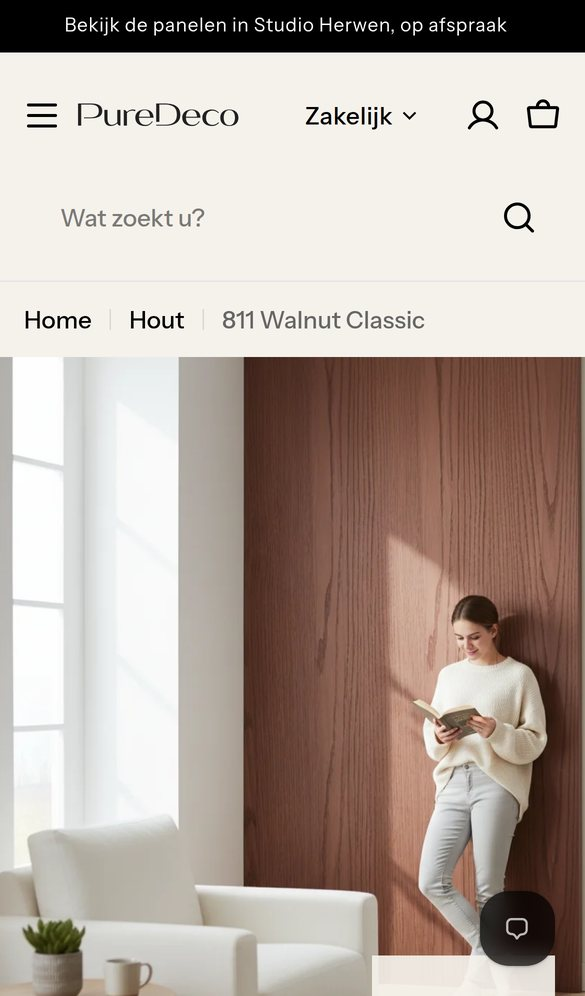
1238 px voor de foto. Topbalk, logo, zoekbalk en kruimelpad nemen ruim een derde van het eerste scherm. De chatknop staat over de foto.
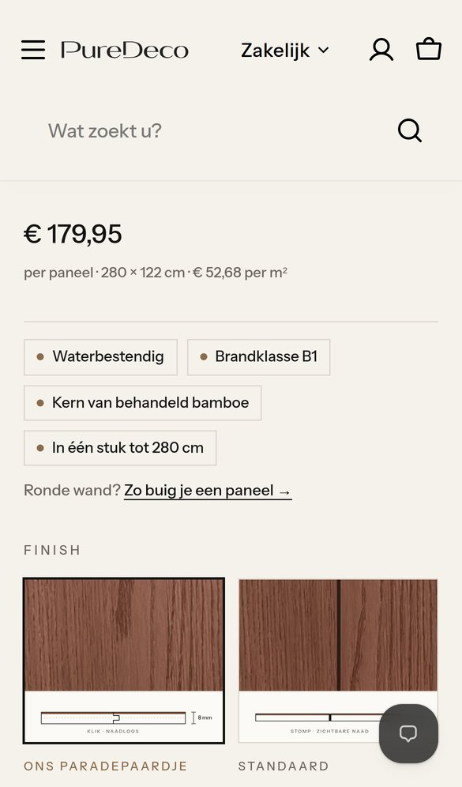
2De kop blijft staan. Logo en zoekbalk blijven bij het scrollen in beeld (150 px). Onder de foto komen eerst titel, intro, prijs, vier labels en de buiglink. De finish begint onderaan.
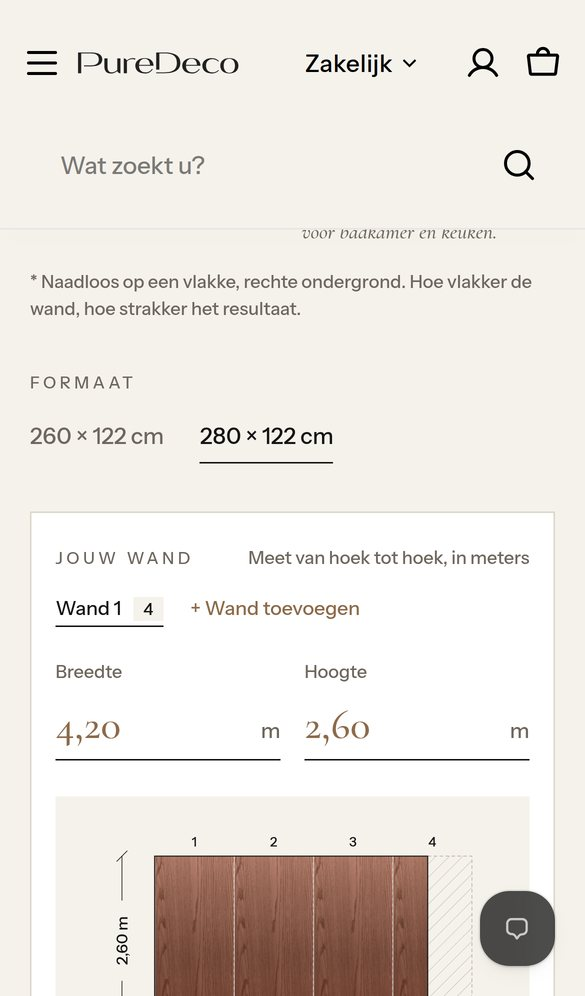
3De finishkaarten zijn 359 px hoog. Daarna komen formaat en de calculator van 632 px, allemaal nog vóór de knop.
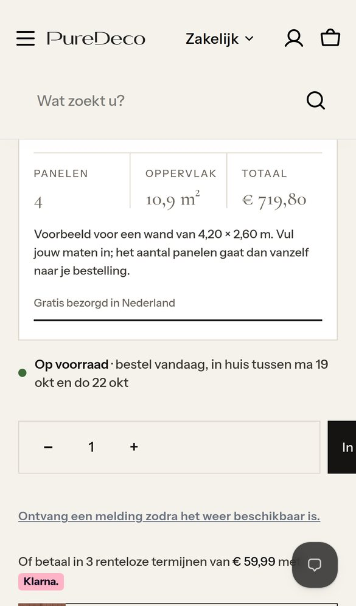
4De knop is afgesneden. Van "In winkelmand" is alleen "In" te zien, omdat een app zijn melding naast de knop zet. Daaronder staat "Ontvang een melding…" terwijl het paneel op voorraad is.
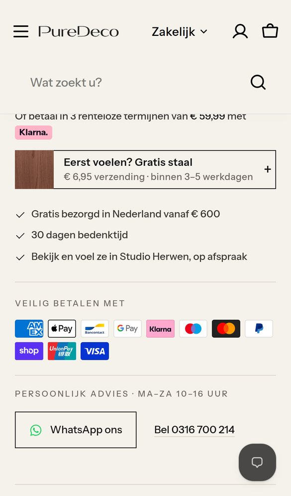
5Gratis staal pas op 2.654 px. Voor een aankoop van € 700 is dat juist de geruststelling die vooraan hoort.
Geldt voor alle drie de opties
Vanaf de eerste seconde staat onderin "Gratis staal" en "In winkelmand · € …". Het bedrag rekent mee met het aantal. De chatknop staat erboven. Bij alle drie de opties.
De zoekbalk wordt een zoekicoon naast de winkelmand. Het kruimelpad verdwijnt op mobiel, maar blijft voor Google in de pagina staan. De kop verdwijnt bij omlaag scrollen en komt terug bij omhoog scrollen.
De foto wordt 1:1 in plaats van 4:5. De sfeer blijft, maar naam en prijs schuiven het eerste scherm in.
Het staaltje met de tekening eronder blijft: klik · naadloos (Signature) en stomp · zichtbare naad (Linea). Alleen de lange zin onder de kaart gaat weg. Die staat al in de specificaties.
De knop staat weer volledig in beeld. De melding "Ontvang een melding…" verschijnt alleen bij uitverkocht. De chatknop staat hoger en is kleiner. Het grote blok "Welke Puredeco Finish past" verdwijnt.
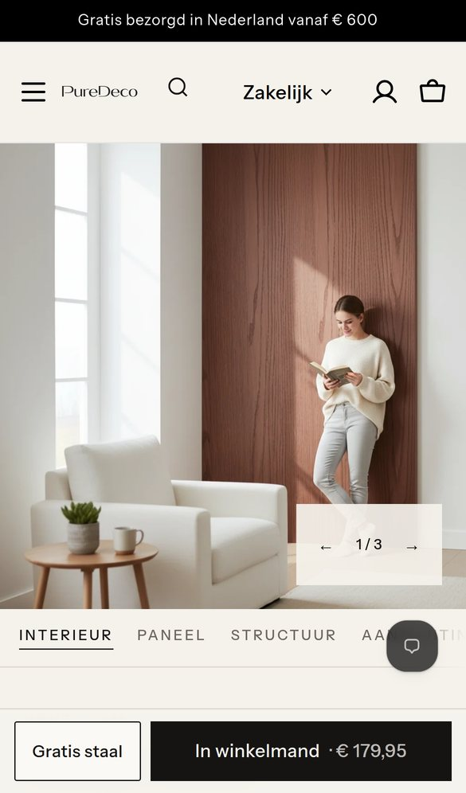
Scherm 1. Foto groter in beeld, zonder zoekbalk en kruimelpad. De koopbalk staat er al.
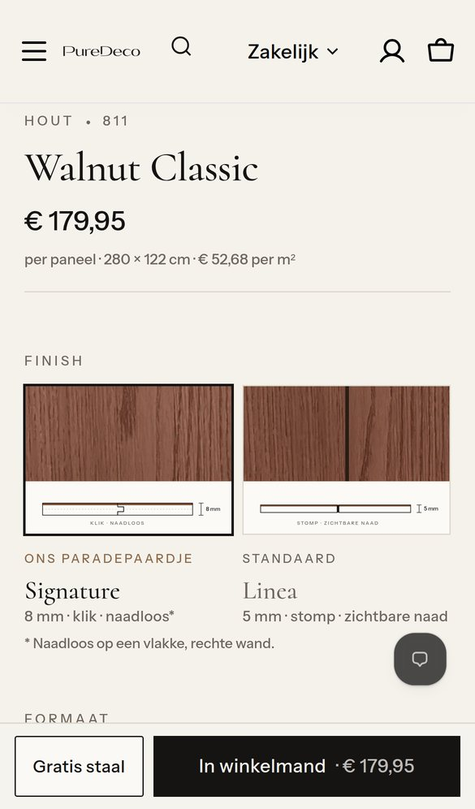
Direct onder de foto: naam, prijs en de finishkaarten met de tekening van klik en stompe naad.
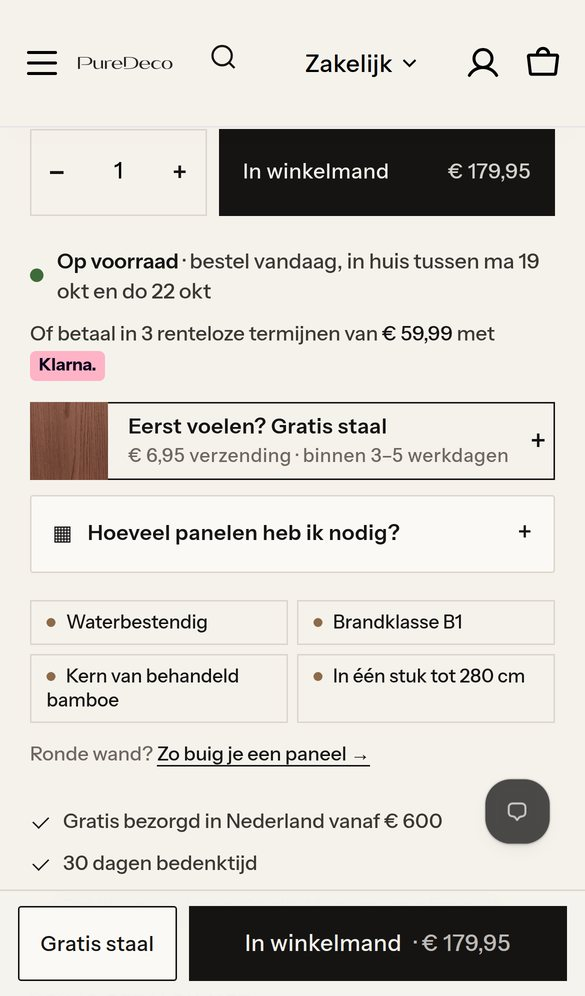
Daarna: formaat, aantal en knop, levertijd, Klarna, gratis staal, de calculator achter "Hoeveel panelen heb ik nodig? +" en de vier sterke punten.
Voor wie
Bezoekers uit een advertentie of Google Shopping die al op dit decor klikken. Zij weten wat ze willen en moeten zonder zoeken kunnen bestellen.
Wat er gebeurt
Commercieel
De kortste pagina: wie weet wat hij wil, ziet niets dat hem afleidt. Het minste werk om te bouwen.
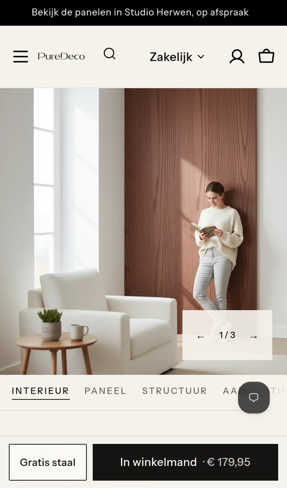
Scherm 1. Zelfde compacte start als D, met de koopbalk.
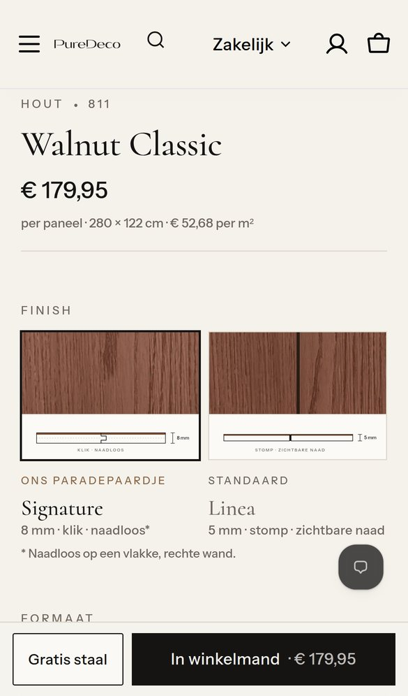
Onder de foto: naam, prijs en de finishkaarten met tekening. Daarna formaat en direct "Jouw wand".
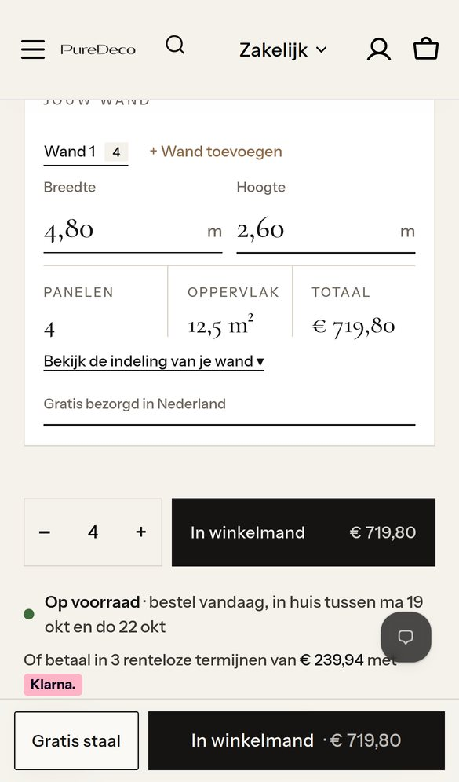
Na invullen van 4,80 × 2,60 m: 4 panelen, 12,5 m², totaal € 719,80, en "Gratis bezorgd in Nederland". Zowel de knop als de koopbalk zeggen "In winkelmand € 719,80". De tekening van de wand klapt open via "Bekijk de indeling".
Voor wie
Iedereen die een wand gaat doen. Dat is bijna elke koper: niemand koopt één paneel.
Wat er gebeurt
Commercieel · waarom dit mijn advies is
De hoogste orderwaarde, en met de vaste koopbalk erbij is de knop toch altijd één tik. De klant ziet zijn wand en totaalprijs vóór de knop en bestelt alles in één keer. Minder kans op te weinig panelen en een nabestelling.
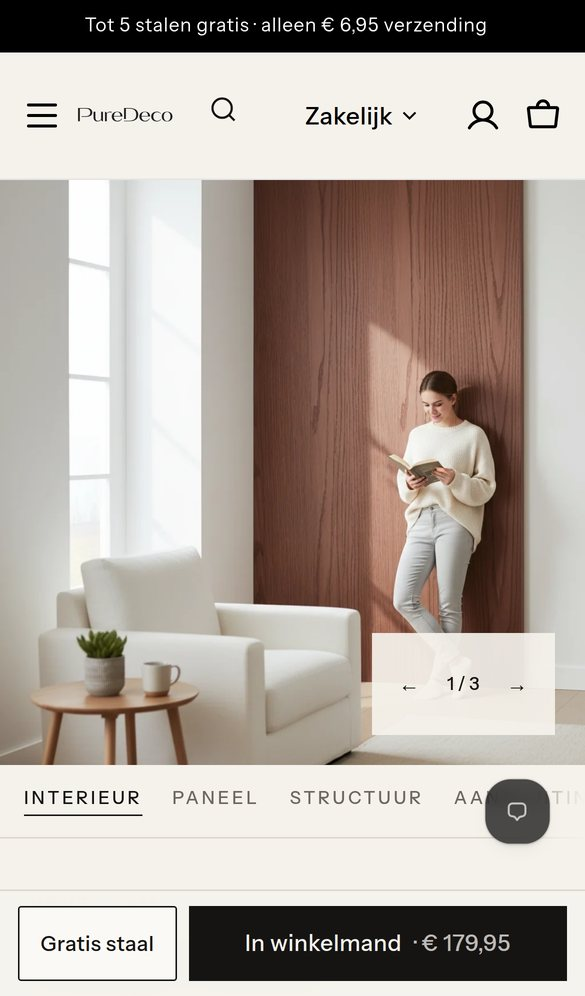
Scherm 1. Zelfde start, met de koopbalk.
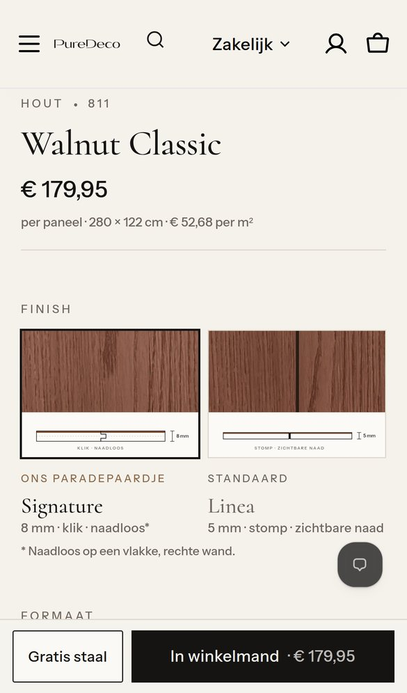
Onder de foto: naam, prijs en de finishkaarten met tekening. De balk blijft staan.
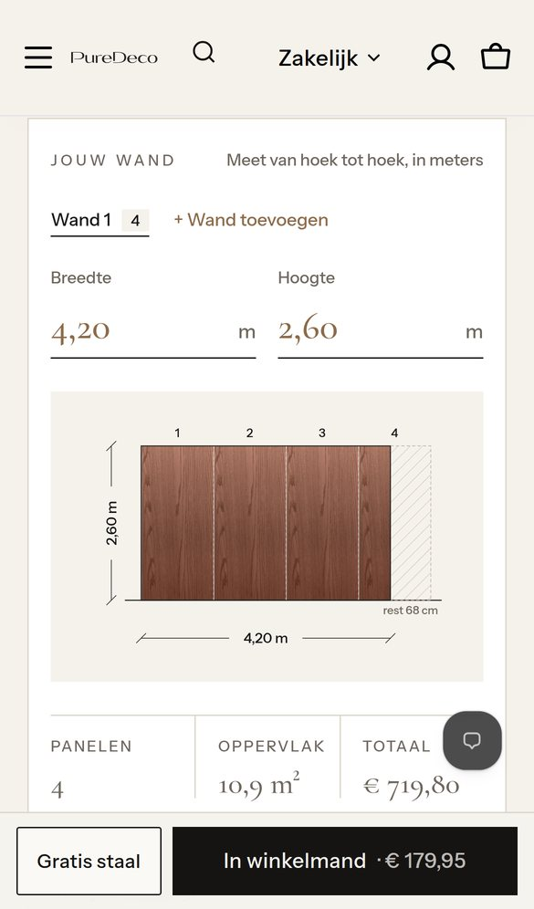
De volledige calculator met tekening blijft. Omdat de knop altijd in beeld is, kost dat geen verkoop.
Voor wie
Wie graag alles op een rij ziet: de tekening van de wand staat meteen open.
Wat er gebeurt
Commercieel
Niets verdwijnt achter een tik. De pagina is wel het langst. Door de koopbalk kost dat geen verkoop, maar de rest van de pagina (staal, zekerheden) zakt verder weg.
| Vaste koopbalk | Knop in de pagina | Finishkaarten | Calculator | Sterk in | |
|---|---|---|---|---|---|
| Nu | Pas na scrollen | 2.454 px · afgesneden | Met tekening, 359 px hoog | Open, 632 px, vóór de knop | – |
| D · Direct | Altijd | 1.190 px | Met tekening | Ingeklapt | Kortste pagina |
| E · Per wand (advies) | Altijd, met totaalbedrag | ≈ 1.525 px | Met tekening | Compact, tekening ingeklapt | Hoogste orderwaarde |
| F · Compleet | Altijd | 1.916 px | Met tekening | Volledig open | Alles in één keer zichtbaar |
Graag jouw keuze
Na je akkoord bouw ik het in H1-test. Nu is er niets aangepast.